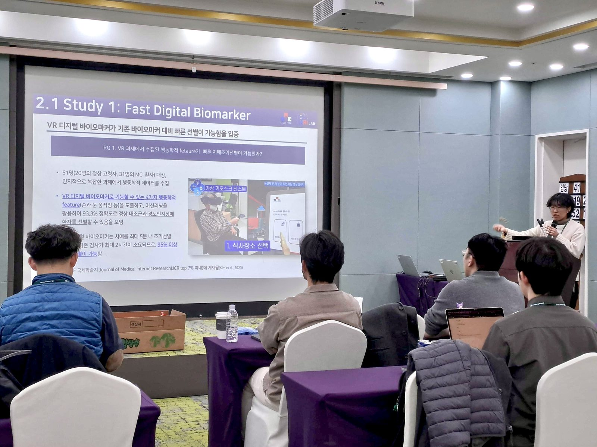
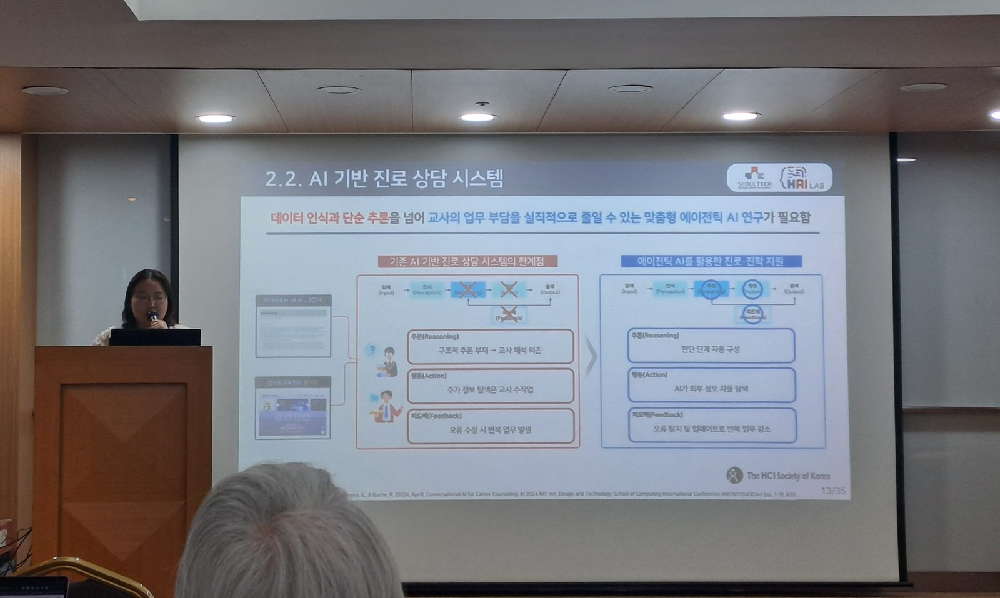
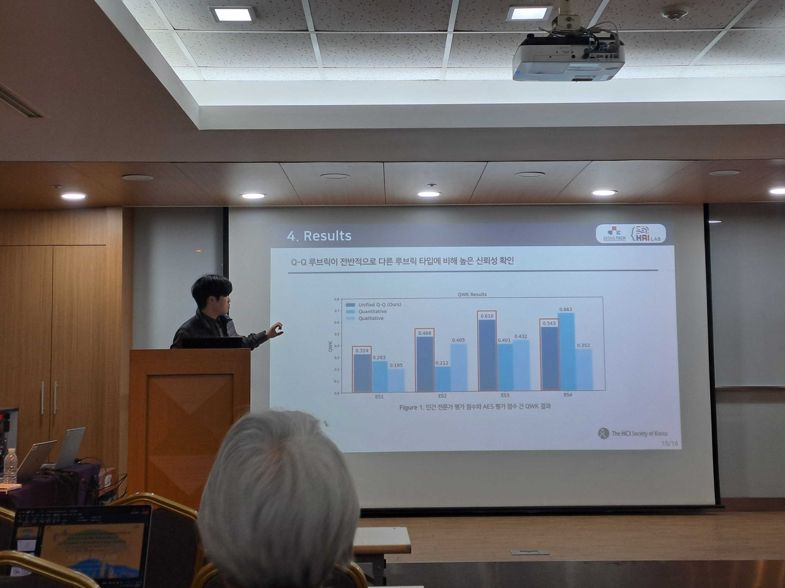
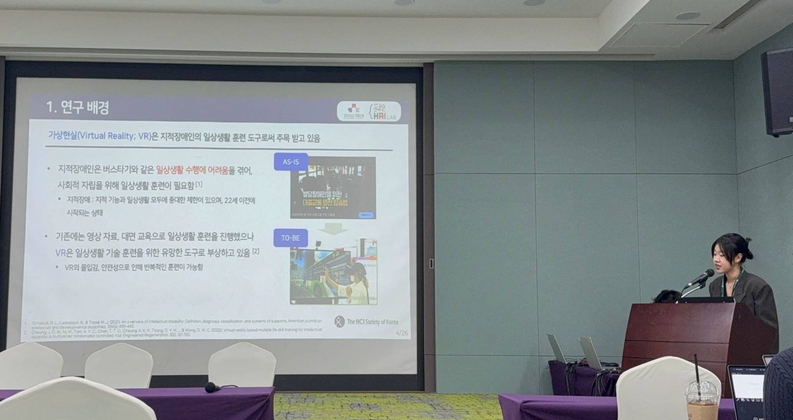
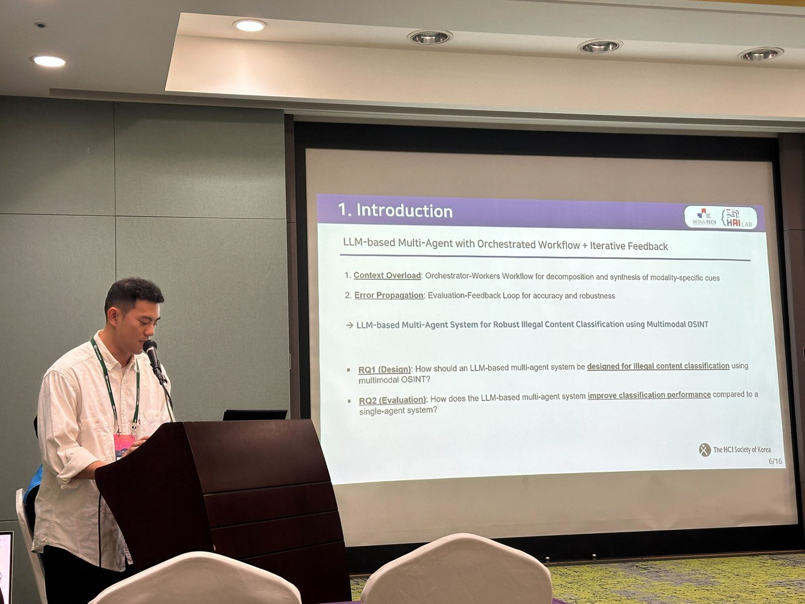
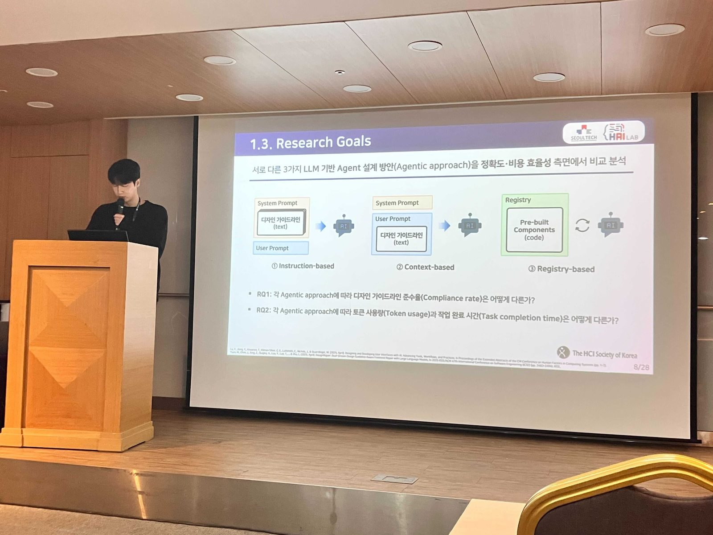
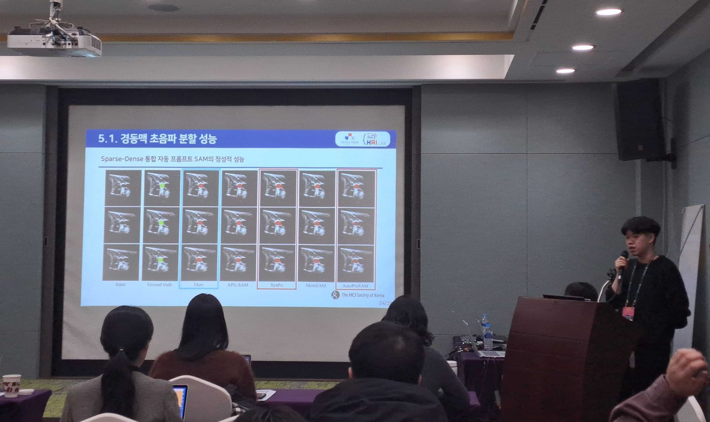
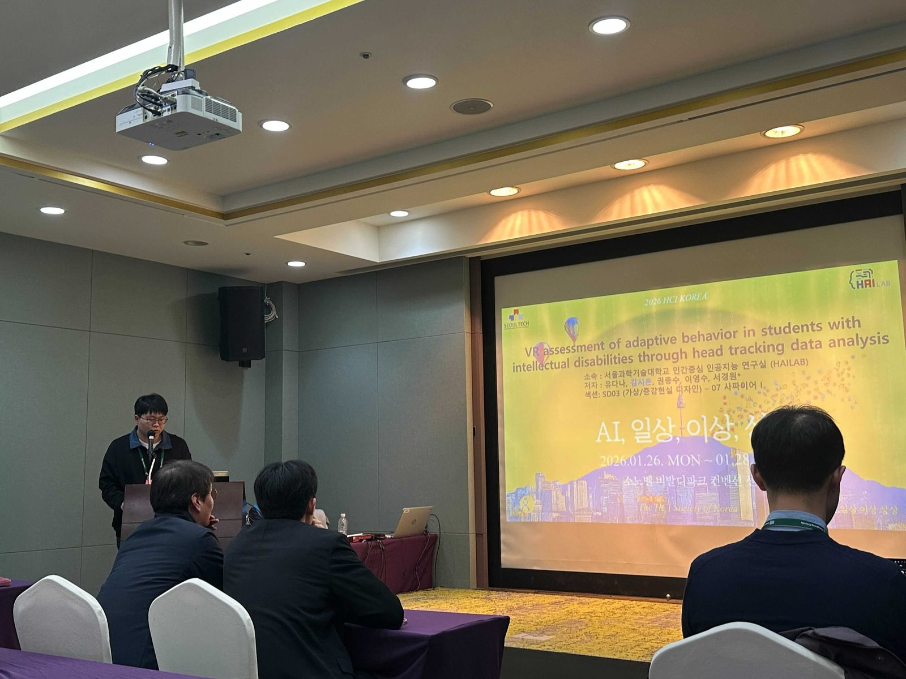

HAI Lab Presented Eight Papers at HCI Korea 2026








국립 서울과학기술대학교 인간중심 인공지능 연구실 (HAI Lab) 김유원 박사과정, 박보겸 박사과정, 이동엽 박사과정, 유다나 석사과정, 이사빈 석사과정, 차승언 석사과정, 강준 학부연구원, 김시온 학부연구원(위에서 부터 순서대로)이 한국 HCI 2026 학회에서 아래 주제로 구두 발표 하였습니다.
Yuwon Kim, Bogyeom Park, Dongyub Lee(Ph.D. student), Dana You, Sabin Lee, Seung Eon Cha(M.S. student), June Kang, Sion Kim(Undergraduate student) presented the research below at the HCI KOREA 2026 conference.
[Doctoral Consortium]
- A Framework for Fast, Reliable, and Explainable VR Digital Biomarkers for Early MCI Screening (Yuwon Kim)
[Conference Paper]
- From Teacher Needs to Agentic AI: Designing and Validating a Personalized Career Counseling System(Bogyeom Park)
- An Unified Quantitative-Qualitative Rubric: Enhancing the Reliability of LLM-based Automated Essay Scoring(Dongyub Lee)
- Detecting barriers in virtual reality Behavioral markers for individuals with intellectual disabilities(Dana You)
- LLM-based Multi-Agent System for Robust Illegal Content Classification using Multimodal OSINT(Sabin Lee)
- Evaluating LLM-based Agentic Approaches for Design Guidelines-Compliant User Interface Generation(Seung Eon Cha)
- Sparse–Dense Integrated Auto-Prompt SAM for Accurate Carotid Artery Segmentation in Ultrasound Imaging(June Kang)
- VR-based assessment of adaptive behavior in students with intellectual disabilities using head tracking data (Sion Kim)